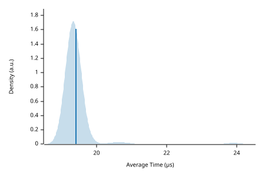

|
 |
| Lower bound | Estimate | Upper bound | |
|---|---|---|---|
| Slope | 9.6696 µs | 9.7254 µs | 9.7824 µs |
| Throughput | 418.71 Melem/s | 421.17 Melem/s | 423.60 Melem/s |
| R² | 0.9420420 | 0.9462518 | 0.9418489 |
| Mean | 9.6443 µs | 9.6824 µs | 9.7326 µs |
| Std. Dev. | 106.44 ns | 229.27 ns | 349.38 ns |
| Median | 9.6026 µs | 9.6092 µs | 9.6244 µs |
| MAD | 21.211 ns | 32.247 ns | 47.623 ns |
The plot on the left displays the average time per iteration for this benchmark. The shaded region shows the estimated probability of an iteration taking a certain amount of time, while the line shows the mean. Click on the plot for a larger view showing the outliers.
The plot on the right shows the linear regression calculated from the measurements. Each point represents a sample, though here it shows the total time for the sample rather than time per iteration. The line is the line of best fit for these measurements.
See the documentation for more details on the additional statistics.
{kind=link}
{kind=link}
{kind=link}
{kind=link}
{kind=link}
{kind=link}
{kind=link}
{kind=link}